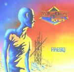

| Artist: | Mysterkah |
| Title: | Fresq |
| Label: | Cyclops CYCL 121 |
| Length(s): | 68 minutes |
| Year(s) of release: | 2002 |
| Month of review: | [10/2002] |
| 1) | Prelude/The Mutant | 7.16 |
| 2) | Misanthrope | 8.28 |
| 3) | The Immortal | 7.50 |
| 4) | Cryosis | 9.08 |
| 5) | Millenium | 8.23 |
| 6) | Broken World | 4.56 |
| 7) | The Survivor | 5.58 |
| 8) | New Day | 8.31 |
| 9) | Finale | 7.19 |
Misanthrope has a bit more of a rocky feel, and is led on by vocals. In this track a likeness with Lana Lane's timbre comes to the fore. The clear and very full synth sound is once again very present.
The Immortal has the guitar taking the lead role, but the synths and voice are always around the corner.
Cryosis takes off like a jetplane, but soon moves into a tranquil course carried by guitars and vocals. This laid back course is sometimes disturbed by some bumps along the way, which are smoothed over by synth carpets, towards the end taking the track to the next level. The choppy drums on this track are a bit more apparent than I care for.
Millenium once more leans toward the guitar, featuring a pretty nice solo. The drumming has some more subtlety now, creating what seems more like a whole. Good stuff.
The keys may try to hide it, bud the guitar solo seriously raises the question whether this isn't a hardrock track. Not the best, although still ok.
The Survivor returns us to more progressive waters, including a pretty nice climatic mayhem.
New Day starts with some My First Casio stuff, but soon enough drastically improves, although a certain sappiness, hitherto absent, remains near for quite a while.
Finale is a pretty fitting closing to the album, showstaging the heavy synth, guitar and vocals.